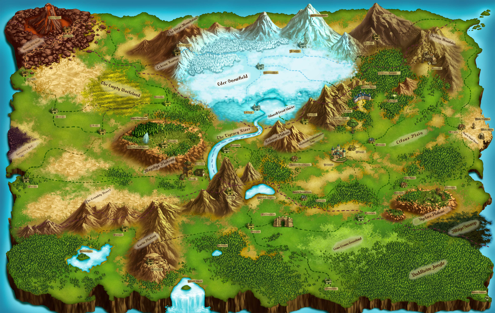
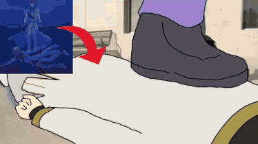
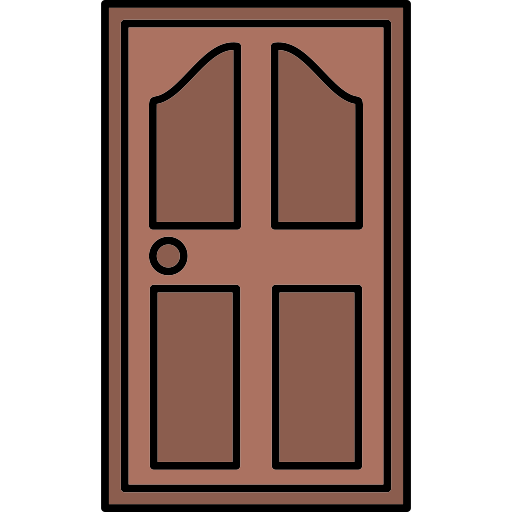

Wallpapers
✖️

The Watchtower

The World Map
The World Map (Old)

The Seven Sins
Welcome to Re:OS
✖️
A Re:Zero inspired OS

Not many features unfortunately as currently in progress. Hope to add Re:Zero specific apps soon 💀
The World Map
✖️
Wallpapers
✖️
The Watchtower

The World Map
The World Map (Old)
The Seven Sins
Find Betty
✖️
Which door is Betty behind?

Fails: 0
Wins: 0